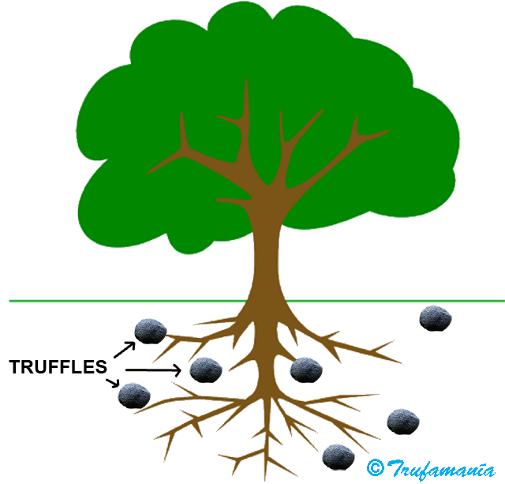

TRUFFLES
What are truffles?
Truffles are fungi that live entirely underground, associated with the roots of certain trees, mostly oaks. Although more than 20 species of truffle are known in Europe, only a few have culinary value.
{kind=link}

Truffles spend their entire lives underground and must be eaten by animals — mainly mammals attracted by their powerful aroma — in order to disperse their spores.
Why are truffles so prized?
For their intense and distinctive aroma, which gives an unrivalled flavour to any dish in which they are used. A winter black truffle no bigger than a walnut is capable of filling an entire room with its scent. Truffles have been known and prized since Antiquity; the ancient Egyptians and Romans already used them in their cooking, though they were valued primarily for their supposed aphrodisiac properties.
Are truffles really aphrodisiac?
Truffles have always had that reputation, and in Antiquity they were consumed more for their alleged aphrodisiac virtues than for their culinary qualities. Galen, the Greek physician, recommended the truffle “to produce a general excitement that predisposes one to voluptuousness”. Ibn Abdun (12th century), in his treatise, warned against them, saying: “Truffles should not be sold around the mosque, for they are a delicacy sought by the dissolute”. Anthelme Brillat-Savarin (1755–1826), French magistrate, gastronome and writer, referred to the truffle as “the diamond of the kitchen” and wrote: “Whoever says truffle pronounces a great word that awakens erotic and gastronomic memories in the sex that wears skirts, and erotic memories alone in the bearded portion of humanity”, though he also noted: “The truffle is not a true aphrodisiac, but on certain occasions it can make women more tender and men more agreeable”. It is now suggested that certain volatile compounds may mimic the pheromones of the male wild boar, but the matter remains unresolved. The best approach is to try and judge for yourself.
Why are truffles so expensive?
Truffles are expensive because they are very rare and extremely difficult to find. Demand is estimated to be ten times greater than supply. Global truffle production is insufficient to meet market demand, and prices continue to rise. Wild truffle populations are declining, and cultivated truffles have not succeeded in bringing prices down.

The Italian white truffle (Tuber magnatum), which only grows wild, can fetch up to US$3,000 per kilogram. The black winter truffle (Tuber melanosporum) can exceed US$1,000 per kilogram.
Do cultivated truffles have the same aroma as wild ones?
Not at all. Cultivated truffles do not develop the same aroma as wild truffles. Wild truffles grow under harsh conditions, adapting to a Mediterranean climate with little summer rainfall and sometimes reaching considerable depths — occasionally half a metre or more underground — in order to protect themselves from drought. The deeper they grow, the more intense their aroma must be to attract animals, and the better they are able to preserve it. Cultivated truffles, by contrast, are irrigated and the soil is worked, so they grow close to the surface and lose much of their aroma. The result is a rounder, more uniform truffle, but with far less fragrance.
What are the best edible truffles?
Two truffles stand out above all others: the white Alba truffle (Tuber magnatum) and the black winter truffle (Tuber melanosporum). All remaining species have considerably less aroma. These include Tuber brumale, Tuber aestivum, Tuber uncinatum, Tuber mesentericum, Tuber macrosporum, Tuber borchii and Tuber indicum.
TUBER MELANOSPORUM


FULL DESCRIPTION The black winter truffle, also known as the Périgord truffle, is found both in the wild and under cultivation. Spain accounts for approximately 40% of global production. This truffle can fetch up to €1,000 per kilogram.
Black winter truffles range in size from a pea to a tennis ball or larger, and can weigh up to 1 kg. Their aroma is intense, persistent and difficult to define. They are best used when cooked, as heat draws out their full depth of flavour more effectively than with the white truffle. Externally they are covered with brownish-black warts, sometimes reddish at the base. The interior is purplish-black, marbled with white veins.
Black winter truffles grow in association with the roots of oaks and hazels in limestone soils. They ripen from December to March. Harvesting is regulated by Spanish law and must be carried out using specially trained dogs; the truffle must be extracted with a dedicated tool known as a truffle knife.
TUBER MAGNATUM


FULL DESCRIPTION The white Alba truffle grows wild only in certain regions of Italy and in Istria. It is extremely rare and all attempts at cultivation have so far failed, making it the most expensive truffle in the world. Depending on the harvest, prices can reach US$4,000 per kilogram or more. The season is very short, running from late September to late November, depending on the region.
White truffles range in size from a walnut to a fist. Their surface is smooth and lightly velvety, pale ochre to dark cream or greenish in colour. The interior, or “gleba”, is darker — reddish brown with fine white veining. It is a delicate truffle that deteriorates within a few days. Its aroma, a complex blend of methane and garlic notes, is highly volatile, which is why white truffles are best served raw, shaved thinly over a dish at the last moment. The World White Truffle of Alba Auction is held each year at the castle of Grinzane Cavour, where truffles regularly achieve record prices well above their usual market value.
{kind=link}
TUBER AESTIVUM


FULL DESCRIPTION Black summer truffle, also known as the “Truffe de la Saint-Jean”. It resembles the black winter truffle externally, but the warts are larger and the interior is beige, marbled with white meandering veins. It is the most widespread truffle in Europe, found from May to September. Its aroma is subtler and more delicate than that of the black winter truffle, but its lower price and near year-round availability make it an excellent choice for experimenting with new recipes. Summer truffles are a great option for beginners and experienced cooks alike.
TUBER UNCINATUM


FULL DESCRIPTION Burgundy truffle. This is the autumn form of Tuber aestivum, ripening from October through January. It has a more pronounced flavour and aroma than the summer truffle. In practice, a late-season summer truffle and a Burgundy truffle cannot be told apart, and molecular analysis has found no differences between them. In France, the Burgundy truffle may only be legally harvested between 15 September and 15 January, to avoid confusion with the summer truffle. Its appearance is similar to Tuber aestivum, but the interior is a darker brown due to greater maturity.
TUBER MESENTERICUM


FULL DESCRIPTION Bagnoli truffle. Its appearance is similar to Tuber uncinatum and it ripens at the same time. The fruiting bodies are small, 2 to 5 cm across, with a cavity at the base. The most distinctive feature is a penetrating smell of phenol or tar. This aroma persists even after cooking, which many people find off-putting, and the truffle is consequently in little demand and rarely found on the market.
TUBER BRUMALE


FULL DESCRIPTION Winter truffle. Very similar in external appearance to Tuber melanosporum, though the interior is greyish brown with broader, sparser white veins, and the warts detach easily when brushed during cleaning. It ripens at the same time and in the same habitat as Tuber melanosporum, but shows a preference for moister sites and is more often associated with hazel. Its aroma is slightly musky and less persistent.
TUBER INDICUM


FULL DESCRIPTION Chinese truffle. This truffle is inexpensive and available in large quantities during the winter truffle season, sold both fresh and preserved. Chinese truffles also circulate under the names Tuber himalayense, Tuber pseudohimalayense and Tuber sinense. They are virtually identical in appearance to Tuber melanosporum, but are easily distinguished by the most important criterion: they have no aroma and are useful only as a garnish. Molecular studies differentiate Tuber himalayense from Tuber indicum, the former being considered a higher-quality and scarcer species, but given the current taxonomic confusion there is no guarantee that what is stated on the label corresponds to what is actually in the tin.
TUBER BORCHII


FULL DESCRIPTION Also known as Tuber albidum. A white truffle marketed in Italy as “bianchetto” or “marzuolo” and in France as “blanquette”. It ripens from January to April, which is why it is also called the spring white truffle. It bears a resemblance to Tuber magnatum but is considerably smaller and has a completely different aroma, though it too has a pronounced alliaceous note.
TUBER MACROSPORUM


FULL DESCRIPTION Smooth black truffle. A relatively little-known species with excellent organoleptic qualities. Known in France as “truffe lisse” and in Italy as “tartufo nero liscio”. It is harvested from September to December in the same habitats as Tuber magnatum. Its aroma and flavour are also similar to those of Tuber magnatum, but its appearance is entirely different: externally reddish brown to black, with a rough surface formed by flat warts that give it a cracked appearance; the interior is dark brownish-black with white veins.
LINKS
• https://www.hongoshipogeos.es Website by Paco Sáinz and Pedro M. Pasaban, with excellent photographs of hypogeous fungi (Spanish)
• https://micofora.com/blog/ The latest news from the world of truffles, by Marcos Morcillo (Spanish)
• http://www.museodelatrufa.com The first museum in Spain dedicated to truffles, located in Metauten, Navarre (Spanish)
• http://www.grossestruffes.com French forum covering all aspects of truffles and their cultivation (French)
• http://www.natruffling.org/ North American Truffling Society (NATS). Its mission is to advance scientific knowledge of North American truffles and truffle-like fungi, and to promote educational activities related to them
 | Antonio Rodríguez trufamania@gmail.com antonio@trufamania.com |